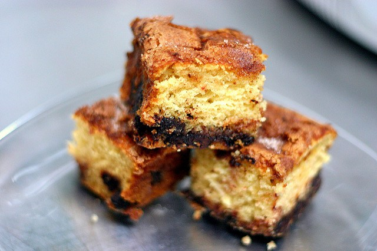

chocolate chip sour cream coffee cake (smitten kitchen)
[
](http://www.flickr.com/photos/smitten/301899959/)
Chocolate Chip Sour Cream Coffee Cake
Cake
1/2 cup unsalted butter (1 stick, 4 ounces or 113 grams) at room temperature
1 1/2 cups (300 grams) granulated sugar
3 large eggs, separated
1 1/2 teaspoons vanilla extract
2 cups (16 ounces) sour cream
3 cups (375 grams) all-purpose flour
1 teaspoon baking powder
1 1/2 teaspoons baking soda
3/4 teaspoon table salt
Filling and Topping
2 cups or 12 ounces semi- or bittersweet chocolate chips or coarsely chopped chocolate bars
1/2 cup (100 grams) granulated sugar
1 teaspoon cinnamon
Preheat oven to 350°F (175°C). Butter a 9-x-13-inch baking pan. If not nonstick coated, cover the bottom with a rectangle of parchment paper. Set pan aside.
In a large bowl, cream butter and 1 1/2 cups sugar. Beat in egg yolks and vanilla. Sift flour, baking soda, baking powder and salt together into a separate bowl. Alternately mix in sour cream and then dry ingredients into butter mixture until both are used up and the batter is smooth and very thick. In a medium bowl, beat eggs whites until stiff, then fold into batter.
In a small dish, whisk together sugar and cinnamon for filling and topping.
Spread half the cake batter in the bottom of prepared pan. Sprinkle with half of cinnamon-sugar mixture and 1 cup of chocolate chips. Dollop remaining cake batter over filling in spoonfuls. Use a rubber or offset spatula to gently spread it over the filling and smooth the top. Sprinkle batter with remaining cinnamon-sugar and remaining chocolate chips. With the palm of your hand, ever-so-gently press the chocolate chips a bit into the batter. No need to submerge them, you just want to make sure they adhere bit.
Bake for 40 to 50 minutes, rotating halfway through, until a tester inserted into the center of the cake comes out clean.